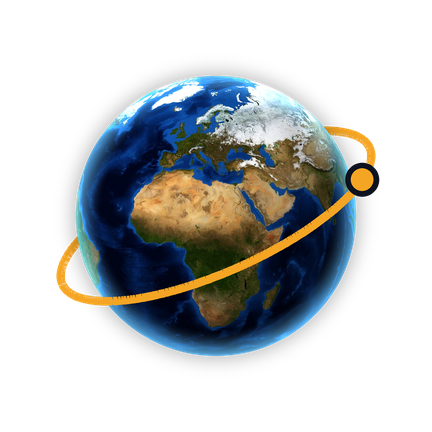

See where your corner of the world sat across 750 million years of Earth's history.
Type in a place — your town, your street, anywhere — and watch it travel. Earth Timeline reconstructs where that patch of ground sat when the continents were arranged very differently: before the Atlantic existed, when everything was joined into Pangea, back to the supercontinent Rodinia 750 million years ago.
Continental positions come from published plate-motion models. They are reconstructions, not measurements, and the uncertainty grows the further back you go — positions hundreds of millions of years old are still actively debated by researchers.
A marker shows where the tectonic plate beneath a place sat at that time. It isn't evidence that the land, coastline or environment you know existed there. The app is for curiosity and learning; for research, please cite the underlying models directly.
Paleogeographic reconstructions: Merdith et al. (2021), via the GPlates Web Service (EarthByte, University of Sydney). Licensed CC BY 4.0.
Present-day Earth imagery: NASA Blue Marble Next Generation (NASA Earth Observatory / Visible Earth). Public domain. NASA does not endorse this app.
Questions, bug reports or feedback: betterworld.knowyourchild@gmail.com. I read everything.